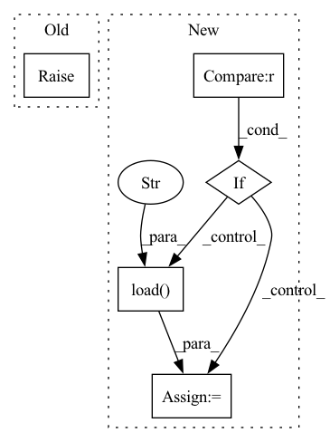

Pattern ID :30585
Before Change
return self.nltk.pos_tag(self.nltk.tokenize.word_tokenize(sentence))
def get_lemmas(self, token_and_pos):
raise NotImplementedError
def get_delemmas(self, lemma_and_pos):
raise NotImplementedErrorAfter Change
return self.tag(self.tokenize(sentence))
def get_lemmas(self, token_and_pos):
if self.lemmatize is None :
self.lemmatize = DataManager.load("NLTKWordnet" ) .lemma
if not isinstance(token_and_pos, list):
return self.lemmatize(token_and_pos[0], token_and_pos[1])
else:In pattern: SUPERPATTERN
Frequency: 3
Non-data size: 5
Instances Fragment ID: 90399481
Project Name: thunlp/openattack
Commit Name: c634d627b4ab36ef1e760e577114f6f91689b022
Time: 2020-05-10
Author: qbjzgy@sina.com
File Name: TAADToolbox/text_processors/default.py
M Class Name: DefaultTextProcessor
N Class Name: DefaultTextProcessor
M Method Name: get_lemmas(2)
N Method Name: get_lemmas(2)
M Parent Class: TextProcessor
N Parent Class: TextProcessor
M File Name: TAADToolbox/text_processors/default.py
N File Name: TAADToolbox/text_processors/default.py
M Start Line: 12
M End Line: 12
N Start Line: 24
N End Line: 31
Before Change
raise NotImplementedError
def get_parser(self, sentence):
raise NotImplementedError
def get_wsd(self, tokens):
raise NotImplementedErrorAfter Change
def get_parser(self, sentence):
if self.parser is None :
self.parser = DataManager.load("StanfordParser" )
return list(self.parser(sentence))[0]
def get_wsd(self, tokens_and_pos):
if self.wordnet is None: Fragment ID: 90399487
Project Name: thunlp/openattack
Commit Name: c634d627b4ab36ef1e760e577114f6f91689b022
Time: 2020-05-10
Author: qbjzgy@sina.com
File Name: TAADToolbox/text_processors/default.py
M Class Name: DefaultTextProcessor
N Class Name: DefaultTextProcessor
M Method Name: get_parser(2)
N Method Name: get_parser(2)
M Parent Class: TextProcessor
N Parent Class: TextProcessor
M File Name: TAADToolbox/text_processors/default.py
N File Name: TAADToolbox/text_processors/default.py
M Start Line: 21
M End Line: 21
N Start Line: 123
N End Line: 125
Before Change
raise NotImplementedError
def get_delemmas(self, lemma_and_pos):
raise NotImplementedError
def get_ner(self, sentence):
raise NotImplementedErrorAfter Change
return [ self.lemmatize(token, pos) for token, pos in token_and_pos ]
def get_delemmas(self, lemma_and_pos):
if self.delemmatize is None :
self.delemmatize = DataManager.load("NLTKWordnetDelemma" )
if not isinstance(lemma_and_pos, list):
token, pos = lemma_and_pos
return self.delemmatize[token][pos] if (token in self.delemmatize) and (pos in self.delemmatize[token]) else token
else: Fragment ID: 90399486
Project Name: thunlp/openattack
Commit Name: c634d627b4ab36ef1e760e577114f6f91689b022
Time: 2020-05-10
Author: qbjzgy@sina.com
File Name: TAADToolbox/text_processors/default.py
M Class Name: DefaultTextProcessor
N Class Name: DefaultTextProcessor
M Method Name: get_delemmas(2)
N Method Name: get_delemmas(2)
M Parent Class: TextProcessor
N Parent Class: TextProcessor
M File Name: TAADToolbox/text_processors/default.py
N File Name: TAADToolbox/text_processors/default.py
M Start Line: 15
M End Line: 15
N Start Line: 32
N End Line: 44